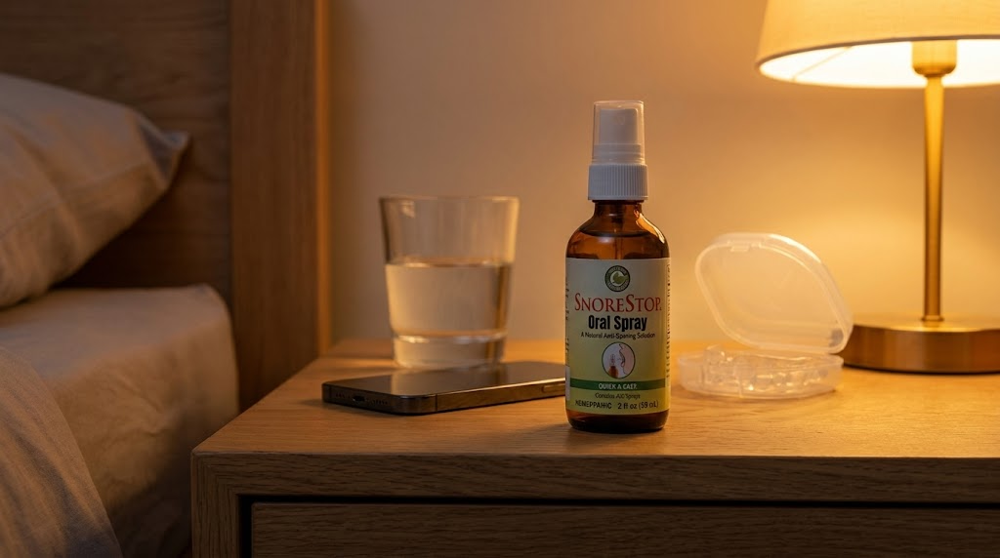
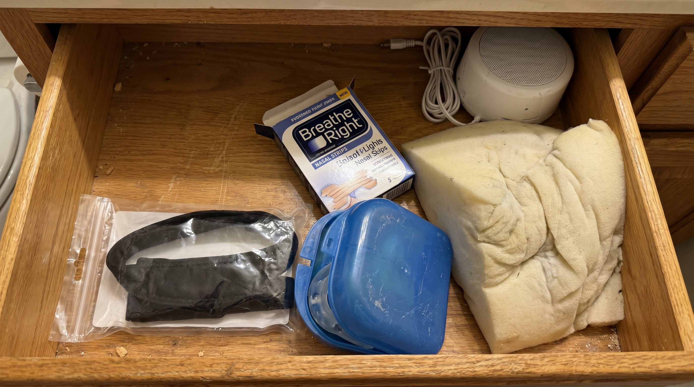

I tried dozens of fixes to stop my husband's wall rattling snore, and nothing even remotely fixed it. Spent more money than I want to admit.
Every single time I found something new I'd do that thing where you tell yourself not to get excited, and then you get excited anyway, and then you lie awake at 2am listening to the same sound wondering why you let yourself hope again.
I stopped counting the things that didn't work a long time ago.
So when my sister sent me a link eight months ago I almost didn't click it. I actually typed out "I've tried everything" and then deleted it and clicked the link anyway because what else was I going to do.
What I found was so simple and so obvious that it made me genuinely angry it had taken me three years to get there.
Let Me Tell You What Three Years Of Trying Everything Actually Looks Like.
It starts reasonably enough. Nasal strips. $12 from the drugstore, seemed logical, did absolutely nothing except leave a red mark across his nose every morning.
Then the wedge pillow. $60. The idea being that if he slept at an angle the snoring would ease. He hated it, pushed it off the bed within a week, and I sold it on Facebook Marketplace for $20.
Then the white noise machine. Which I want to be clear did not stop the snoring, it just meant I was lying awake listening to ocean sounds AND snoring simultaneously.
Then the mouth tape. Which he tried exactly once and said made him feel like he was suffocating, so that was the end of that.
Then the $180 mouthguard that he wore for four nights before deciding it was making his jaw ache, and which now lives in the bathroom cabinet because neither of us can bring ourselves to throw away something that cost $180.
Then the chin strap that made him look so ridiculous we both laughed for five minutes and then he never wore it again.
A dozen things. Thousands of dollars. Zero results. And each failure made the next attempt harder to believe in.

The Thing Nobody Tells You About Trying Everything.
It's not just the money. Money you can recover from.
It's the hope. The specific exhausting cycle of finding something, letting yourself believe this might be the one, waiting, realizing it isn't, and then having to talk yourself into trying again the next time.
After a while that cycle breaks something in you. Not dramatically. Just quietly. You stop getting excited when you find something new. You stop telling your husband about it beforehand because you're tired of the look he gives you when it doesn't work. You start ordering things and not mentioning them and just quietly placing them on the nightstand and hoping.
And when those don't work either you just add them to the pile and say nothing and lie there in the dark wondering if this is just how the rest of your life is going to sound.
I had genuinely accepted that this was unsolvable. That some people just snore and some people just live with it and I was going to be one of the ones who lives with it forever.
That's where I was when my sister sent me that link.
"You stop telling your husband about it beforehand because you're tired of the look he gives you when it doesn't work."
What My Sister Sent Me.
She texted it on a Tuesday afternoon with zero context. Just the link and "try this."
I almost sent back "I've tried everything" because I had. But something made me click it instead, maybe curiosity, maybe boredom, maybe just the particular desperation of someone who has run out of better options.
It was a natural throat spray called SnoreStop. Been in American pharmacies since 1995. Not a gadget, not a device, not something requiring batteries or a subscription or a fitting from a specialist. Just a spray you use two seconds before bed.
My first thought was that I'd definitely tried a spray before. My second thought was that actually I hadn't, I'd tried strips and devices and pillows and tape but never a spray, so technically this was new territory.
My third thought was that I had $180 sitting in my bathroom cabinet that said I probably shouldn't get my hopes up.
I got my hopes up anyway. I ordered it.
What I didn't know yet was that this time was going to be different, not because I'd finally found some miracle, but because I'd finally found something that actually addressed the real reason snoring happens in the first place.

Why Everything Else Failed — And Why This Didn't.
This is the part I wish someone had explained to me three years ago before I spent all that money.
Snoring is a throat problem. Not a nose problem, not a position problem, not a jaw problem in isolation. While you sleep the soft tissue at the back of the throat relaxes and collapses slightly, and when air passes through that narrowed space the tissue vibrates, and that vibration is the sound. That's the whole thing. That's all it is.
Nasal strips don't touch the throat. Wedge pillows don't touch the throat. White noise machines obviously don't touch the throat. Even most mouthguards address the jaw without properly addressing the tissue vibration that actually creates the sound.
SnoreStop coats that soft throat tissue directly with a fine natural spray that reduces the vibration at the source, without a mask, without a device, without a prescription, without anything except two seconds before bed. It had been trusted in American pharmacies for thirty years and over 250,000 people had already found it before I finally did. I just hadn't known to look for it.
The reason everything else failed wasn't bad luck. It was that everything else was solving the wrong problem.
What Happened When He Used It.
I put it on his nightstand without explaining much. He picked it up, read the back, looked at me with the exact expression I expected, the one that says "really, another one of these."
I said: "Just try it. Two seconds. That's all I'm asking."
He used it that night. I lay there in the dark waiting for the sound to start up the way it always did, that familiar rumble building within minutes of him falling asleep.
It was quieter. Not gone, but noticeably, measurably quieter. Different in a way I could hear clearly even though I couldn't have explained exactly what had changed.
The second night was quieter still.
By the end of the first week I was waking up in the morning and realizing I hadn't tracked the sound at all during the night. Hadn't catalogued it, hadn't noted when it was worse, hadn't lain there doing the mental math of how many hours I had left before the alarm went off.
I had just slept.
It took me a few mornings to even recognize what that felt like. I'd forgotten.
What I Wish I'd Known Before I Spent Three Years On Things That Didn't Work.
The alternatives I looked into before finding this, just so you understand what we're comparing against.
It has been sitting in pharmacies since before I started buying all the things that didn't work. I could have found this at the beginning. I didn't, because nobody told me, and I wasted three years and a lot of money getting to something that was there the whole time.
Eight Months Later. Still Using It. Still Working.
He uses it every night now. It takes two seconds and he doesn't think about it. It's just part of the routine the way everything else eventually becomes part of the routine.
The $180 mouthguard is still in the bathroom cabinet. I don't know why I keep it. Maybe as a reminder of what three years of trying the wrong things looks like, or maybe I just haven't gotten around to throwing it away.
What I do know is that I sleep now. Properly, uninterruptedly, through the night. I wake up in the morning and the first thing I feel is rested instead of the first thing I feel being the quiet calculation of how much sleep I managed to piece together.
Three years. Thousands of dollars. A dozen things that didn't work. And the thing that did was under $50 and had been in pharmacies since 1995.
I'm genuinely angry about how long it took me to find it. But mostly I'm just glad I clicked that link.
The One Thing That Made Me Actually Order It.
Even after everything, even after my sister had sent it and I'd read about it and it made sense, I hesitated. Because I had hesitated hopefully before and been disappointed and I wasn't sure I had another disappointment in me.
What got me over the line was the guarantee.
SnoreStop comes with a full 30-day money back guarantee, and when you've already spent money on a dozen things that didn't work, a guarantee is not a small thing. It means the worst case scenario is not "another thing that doesn't work and I'm out more money." The worst case scenario is "another thing that doesn't work and I get every single dollar back."
Either It Works, Or It's Completely Free.
Thirty days. If it doesn't do what it says, every dollar back, no conversation, no justifying yourself, no runaround from a company that wasn't confident in what it was selling.
When you've already tried a dozen things that didn't work, a guarantee like this changes everything. Because it means there's finally a version of trying something where you genuinely cannot lose.
That framing changed everything. For the first time in three years trying something felt completely safe.
Why I'm Writing This.
Because my sister sent me a link on a Tuesday and it changed three years of something I had completely given up on, and I keep thinking about how many people are exactly where I was, buying the wrong things, losing hope, accepting that this is just how it's going to be.
It doesn't have to be how it's going to be.
There is something that actually addresses the real reason snoring happens. It's been in pharmacies for thirty years. It costs under $50. It takes two seconds before bed. And if it doesn't work you pay nothing because the guarantee covers you completely.
I wish my sister had sent me that link three years earlier. I'm sending it to you now.
Don't spend another three years on things that don't work. Just try the one that does.
Full 30-day money back guarantee — either it works or it's free
Ships in 2 days · No prescription needed · Natural ingredients